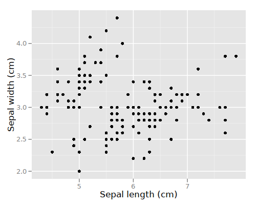
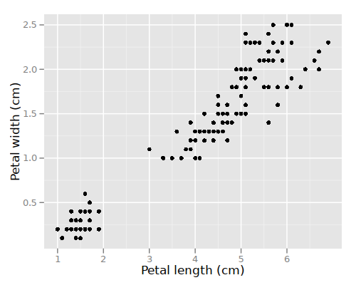
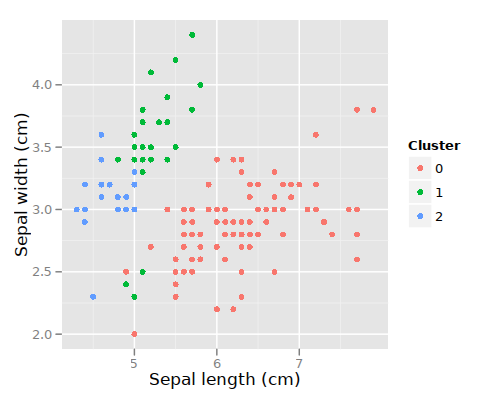
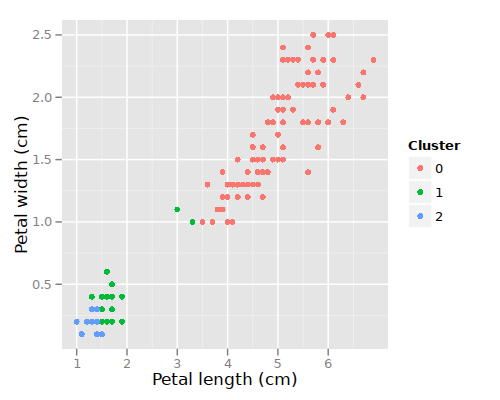
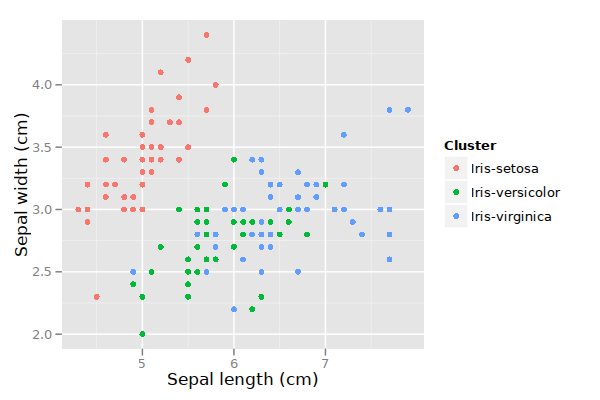
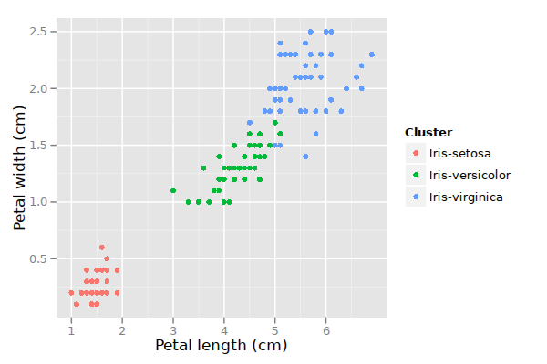

k-means clustering
Table of Contents
Summary
- Clustering is used for finding groups or "clusters" of data for which the true groups/labels are unknown.
- k-means is an iterative algorithm which assigns cluster "centroids" (an average of the points that make up a cluster) and then reassigns points to the new cluster-centroids. The algorithm stops when points don't change their cluster assignments.
- k-means requires deciding upfront the value of \(k\).
- k-means effectively creates a Voronoi diagram of the space.
Suppose we measure some properties of flowers, species of iris to be precise (data available from UCI). We have a table like the following:
| Sepal length (cm) | Sepal width (cm) | Petal length (cm) | Petal width (cm) |
|---|---|---|---|
| 5.1 | 3.5 | 1.4 | 0.2 |
| 4.9 | 3.0 | 1.4 | 0.2 |
| 4.7 | 3.2 | 1.3 | 0.2 |
| … | … | … | … |
Here are two plots of these data.


There are more plots we could study (e.g. Sepal width vs. Petal length, etc.). However, sometimes we may have many more than just four dimensions in our data. Plotting is not always the best way to study the data.
Clustering
We want to know if there are more than one distinct kinds of iris plants represented in these data. In other words, we want to classify each measured flower as some species of iris. But we don't know, a priori, which points belong in which groups. We see in the second graph that, most likely, the bottom left cluster of points is a likely a distinct group.
There exist many algorithms to automatically cluster data like these. We'll look at the simplest, which is called k-means.
k-means clustering
The k-means algorithm is the simplest and most intuitive. It works as follows.
- Decide how many clusters we want. Call this \(k\). (Because we have to choose \(k\), this method is "semi-supervised" rather than wholly "unsupervised.")
- Create \(k\) random cluster means (also called "centroids"). Our data come in four dimensions; thus, each cluster mean will be four-dimensional. We can choose random values for each dimension for each of the \(k\) clusters or we can choose a random data point to represent each initial cluster mean.
- For each measured flower (each row in the table of data), use Euclidean distance (which works in any number of dimensions) to determine which cluster's mean is closest to the measurements. Assign this flower to that cluster. (Note it may have already been assigned to that cluster.)
- Now that all flowers have been assigned (or reassigned) to clusters, recalculate the cluster means. This simply involves summing all data vectors in the cluster and dividing by the number of members in the cluster.
- Go back to step 3 until no cluster assignments change.
The result is each flower (each row in the table) is assigned to a cluster. We can graph these clusters with color.


If we get a new set of measurements for a new plant, we can predict (approximate, guess) its membership in one of the clusters by finding which cluster mean is closest.
Unfortunately, these clusters are not entirely accurate. The following graphs show the real clusters.


Confusion matrix
We can think of k-means as a classifier, at least in the sense that it is attempting to group same-class data together. An easy way to understand exactly how badly, and in what ways, the classifier misclassified is to write a confusion matrix:
| 0 | 1 | 2 | |
|---|---|---|---|
| 0 | 28 | 22 | Iris-setosa |
| 47 | 3 | 0 | Iris-versicolor |
| 50 | 0 | 0 | Iris-virginica |
In a confusion matrix, the predicted class labels (0, 1, 2) are written along the top (column names). The true class labels (Iris-setosa, etc.) are written along the right side. Each cell in the matrix is a count of how many instances of a true class where classified as each of the predicted classes.
With a confusion matrix, we can see at a glance whether some true class is very confused. A perfect classification will produce a confusion matrix with all zeros except on the diagonal. A confused classification will have large values not on the diagonal.
Voronoi diagram
If we look at a random x,y coordinate in the cluster graph, we will find that one cluster (one mean) is closest. Thus we can color each x,y point (each pixel) with the color of its assigned cluster. The result is a digram that divides the whole space into cells. The borders between cells are exactly half-way between the two closest cluster means. This kind of diagram is called a Voronoi diagram (named after Georgy Voronoi).

From Wikipedia.
{kind=link}
View an animation showing the Voronoi diagram in each step of the k-means algorithm.
These diagrams are actually quite useful in many areas of AI. For example, consider a robot navigating through a building. Draw walls and other obstacles with points. Then construct the Vornoi diagram; the Voronoi borders will be equidistant between the nearest walls. If the robot simply follows these Voronoi borders, then it will stay as far away from the walls as is physically possible. This is usually the safest route for a robot. A visualization of this process can be found at Robot Path Planning Using Generalized Voronoi Diagrams.
Benefits of k-means
- Very simple algorithm.
- Reasonably fast (although its "worst case" behavior is poor).
Drawbacks of k-means
A key limitation of k-means is its cluster model. The concept is based on spherical clusters that are separable in a way so that the mean value converges towards the cluster center. The clusters are expected to be of similar size, so that the assignment to the nearest cluster center is the correct assignment. When for example applying k-means with a value of \(k=3\) onto the well-known Iris flower data set, the result often fails to separate the three Iris species contained in the data set. With \(k=2\), the two visible clusters (one containing two species) will be discovered, whereas with \(k=3\) one of the two clusters will be split into two even parts. In fact, \(k=2\) is more appropriate for this data set, despite the data set containing 3 classes. As with any other clustering algorithm, the k-means result relies on the data set to satisfy the assumptions made by the clustering algorithms. It works well on some data sets, while failing on others. (Wikipedia)
How to choose k
Check out the Wikipedia article about calculating the silhouette, which is a measure of the average dissimilarity of the clusters. We can start at \(k=1\) and increase it until we find a max silhouette (or at least a "local" max).